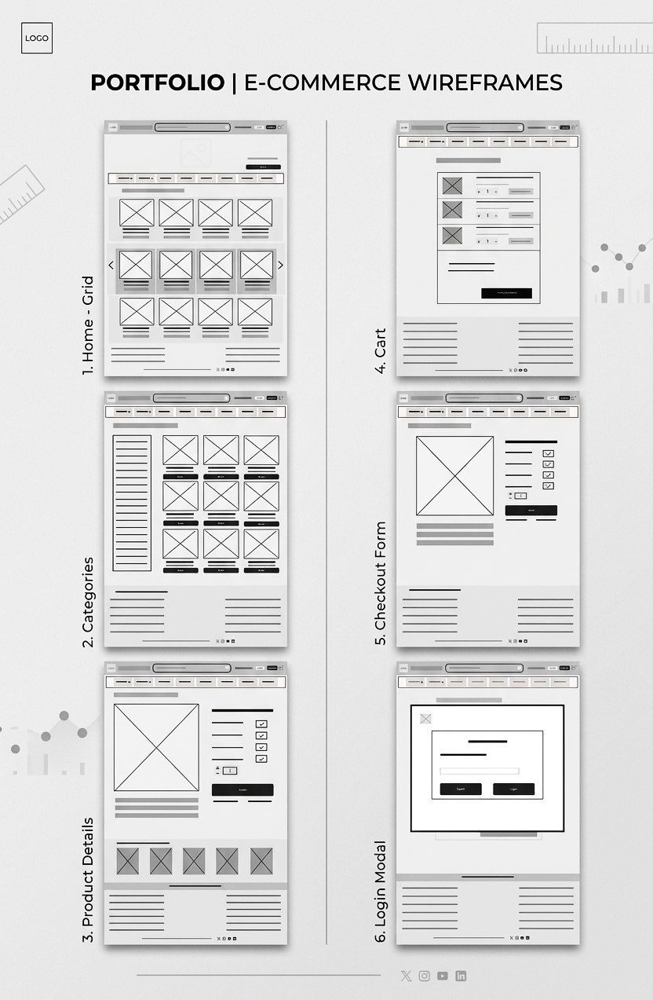
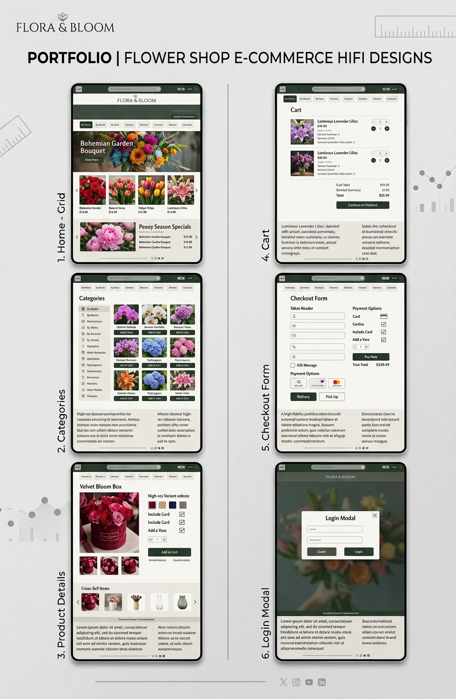

Flora & Bloom E-Commerce Platform


Design & Execution Highlights
Flora & Bloom is a sophisticated, high-fidelity e-commerce web concept designed to provide a seamless, elegant, and user-centric shopping experience for a premium floral boutique. Starting from low-fidelity wireframes, the project maps out the complete user journey from product discovery to a streamlined checkout process.
The visual design leverages a clean, minimalist aesthetic with an earthy, organic color palette—combining soft sage greens, deep forest accents, and warm neutrals—to complement the vibrant imagery of the floral arrangements without distracting from the shopping experience.
The User Journey & Key Screen Breakdown
The design covers six critical touchpoints of the e-commerce conversion funnel, ensuring an intuitive user interface (UI) and a frictionless user experience (UX):
- Home Grid: Features a bold, immersive hero section highlighting seasonal collections ("Bohemian Garden Bouquet") followed by clear, categorized grids for featured products and limited-time specials to maximize immediate user engagement.
- Categories Page: Features a persistent, comprehensive left-hand filtering sidebar allowing users to browse by flower type, occasion, color, or price range, paired with a clean 3-column product grid with instant "Add to Cart" actions.
- Product Details: Optimizes product configuration by letting users seamlessly select add-ons (cards, custom vases) via crisp checkbox components, supported by an aligned horizontal cross-sell layout for upselling related items.
- Shopping Cart: A dedicated, transparent review page detailing product variations, quantities, and a clear breakdown of estimated shipping, taxes, and total costs before initiating checkout.
- Checkout Form: A highly organized, single-column data-entry form designed to reduce cart abandonment. It features explicit payment option selectors and a clear visual hierarchy for delivery vs. pick-up preferences.
- Login Modal: An elegant, non-intrusive modal overlay that simplifies user authentication by offering a direct choice between quick guest checkout and secure user sign-in.
Tools & Skills Applied:
Adobe Photoshop •
Figma •
Typography